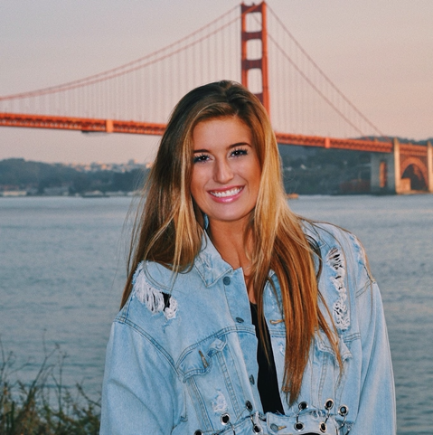
Katy is a fourth-year Integrative Biology Major and Disability Studies Minor from Little Rock, Arkansas. She is a certified EMT in the state of California volunteering with the Berkeley Medical Reserve Corps. Currently, she works at UCSF as a research intern at the Eli and Edythe Broad Center of Regeneration Medicine and Stem Cell Research at UCSF looking at the regulation of hematopoietic sites in Drosophila melanogaster. She adores the outdoors; hiking, camping, and visiting the lake are some of her favorites! And in her free time, Katy loves to try new foods, cycle, learn new songs on the guitar, and explore the Bay Area. In the future, she hopes to attend medical school and complete her ultimate bucket list item of visiting every continent!
Katy Kincannon
Editor in Chief
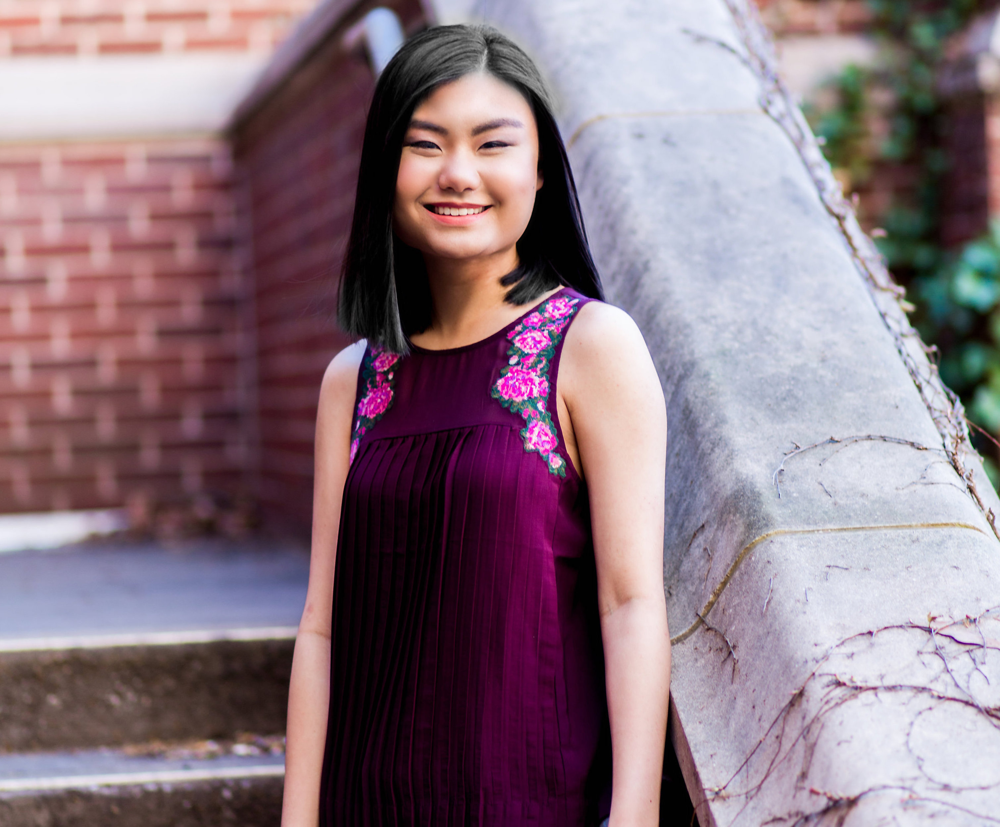
Caitlin, who has been a member of the Journal since Fall 2017, is a fourth year Legal Studies major with a strong emphasis on Psychology. She currently volunteers at the East Bay Sanctuary Covenant, and she works as the Strategic Relations Manager for a startup. After graduation, she plans on attending law school to help her pursue her long-term goal of becoming a lawyer. When she is not working or in classes, she enjoys working out and spending time with her cat.
Caitlin Arango
Executive DirectorJessica Waller is a third year Legal Studies major from Mercer Island, Washington. She plans to minor in Journalism, having previously been a page editor and worked for a local community college. Currently, she works at Somametrics, a sales and marketing company as a research intern. Outside of UJPB, she enjoys writing music, hiking, and petting random dogs. Currently, she volunteers with the local humane society, fostering dogs and raising funds or supplies. She is still deciding her future path, but plans to attend Law or Graduate school. Her dream travel destination would be to scuba dive at the Great Barrier Reef in Australia and with Whale Sharks.
Jessica Waller
Executive Director
Chris is a 5th year Psychology and Social Welfare major with a minor in Early Development and Learning Science. He’s particularly interested in learning how differences in typical and atypical development lead to differential outcomes and how emotion-relating processing and socialization contribute to development. During his off time, Chris enjoys chillin’ with his dog (Gambit).
Chris
Editor
Emily McGraw is a second-year intended psychology major. She is interested in exploring social psychology, power dynamics, and mental illness in adolescents. In the future, she hopes to participate in research regarding these topics. In her free time, she enjoys cooking, crocheting, and hiking.
Emily McGraw
Editor
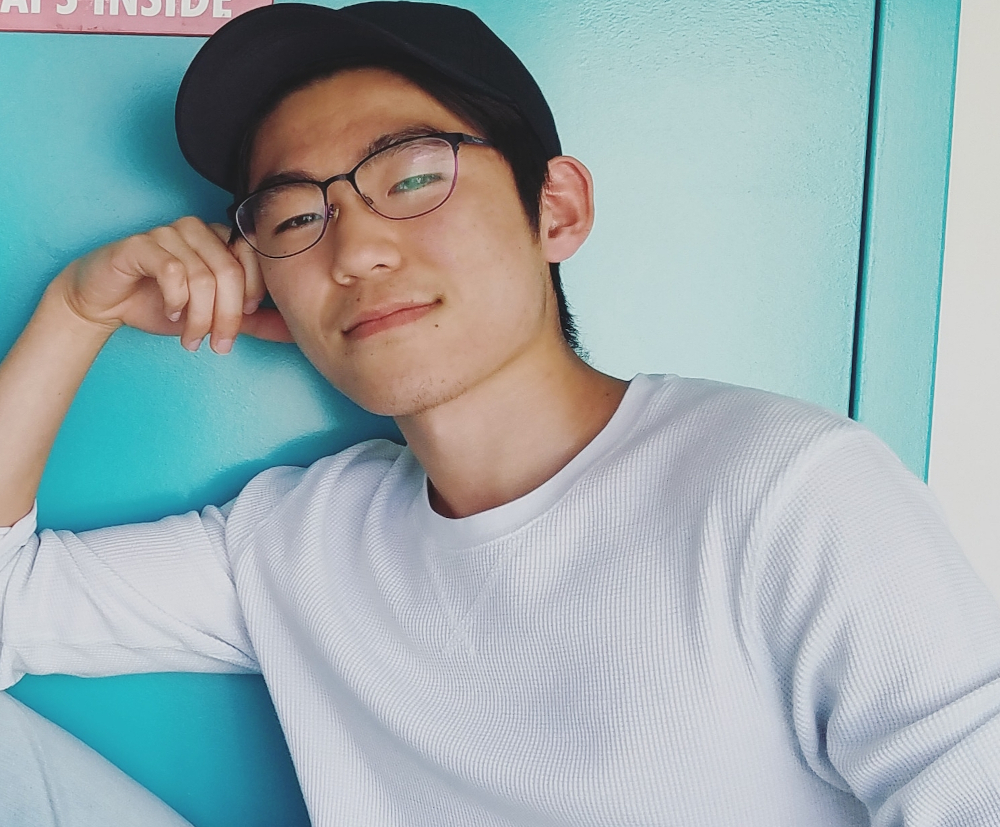
Eric is a third-year Psychology major. He is currently a certified EMT, hoping to work part-time for an ambulance company. During his spare time, Eric trains in and teaches Brazilian Jiu-Jitsu, forces his friends to play board games, and binges the Office on Netflix. After graduating, Eric hopes to attend medical school and pursue a career in psychiatry.
Eric
EditorEva is a recent graduate from UC Berkeley with a B.A. in Psychology and a minor in English. She is currently the Assistant Clinical Research Coordinator for the UC Davis Alzheimer's Disease Center. She currently is managing a study examining racial and ethnic differences in aging and Alzheimer's Disease, and working on her own publications. In her free time, Eva is maintaining her work with UJPB and preparing to apply to graduate school in the fall to earn a PhD in Cognitive Psychology and pursue her dream of becoming a professor.
Eva
Editor
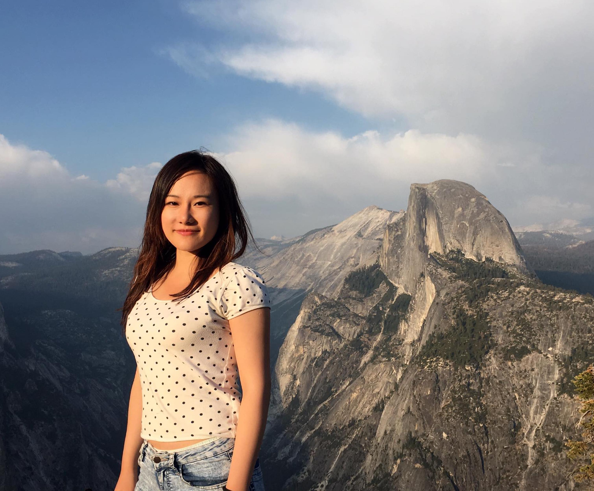
Fiona is a fourth-year psychology major at Berkeley, interested in the field of organizational behavior. She has worked in Professor Dana Carney’s Micro lab studying non-verbal behaviors for two years and then moved on to work in Professor Cameron Anderson’s lab on projects related to perceptions of competence and social status. She takes an interest in the entrepreneurial scene in the Bay Area too. She worked as a consultant/project leader during the summer, and is dedicated to the vision of combining technology and psychology to help human tap into their potentials and achieve self-actualization. Outside academics and professional life, she is passionate about mental health and mindfulness, especially committed to addressing the psychological wellbeing of international students at Berkeley.
Fiona
Editor
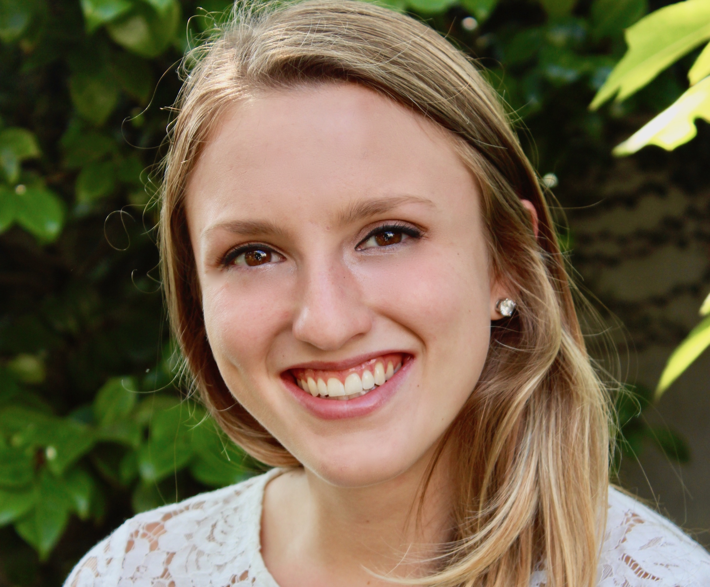
Grace is a senior psychology major at the University of California, Berkeley. She works in two research labs: the Emotion and Emotion Regulation Lab at Cal, and the Prodrome Assessment Research and Treatment at UCSF, studying schizophrenia. She is currently pursuing her senior honors thesis regarding emotion regulation, romantic relationships, and culture. She is planning to continue working in research for a year or two after graduation, before applying to graduate school. In her free time, she volunteers with Crisis Text Line, runs, and loves the Great British Bake Off!
Grace
Editor
Jessica Waller is a second year Intended Psychology major from Mercer Island, Washington. She plans to minor in Journalism, having previously been a page editor and worked for a local community college. Outside of UJPB, she enjoys writing music, hiking, and petting random dogs. Currently, she volunteers with the local humane society, fostering dogs and raising funds or supplies. She is still deciding her future path, but plans to attend Law or Graduate school. Her dream travel destination would be to scuba dive at the Great Barrier Reef in Australia and with Whale Sharks.
Jessica Waller
Editor
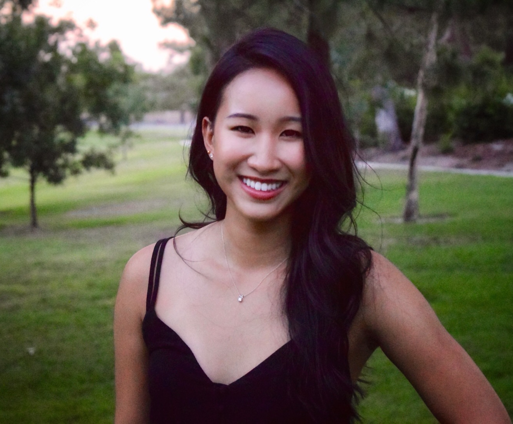
Jewelia is a 3rd year Psychology major, Early Development and Learning Science minor. She is passionate about developmental neuroscience and is interested in the way brains change over time and vary among individuals. Currently, she works as a research assistant in both Silvia Bunge’s Brain Lab, studying sulcal patterns in the prefrontal cortex, and in Qing Zhou’s Family & Culture Lab, studying executive functioning in children. In her free time, she loves to hike, read, and explore new places with her friends!
Jewelia
Editor
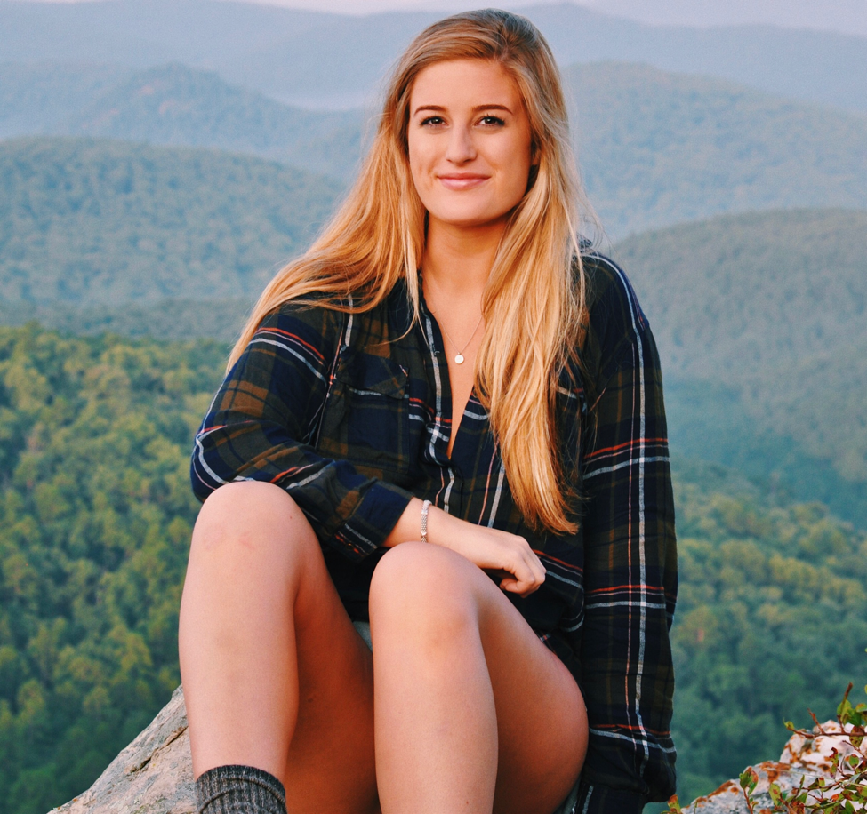
Katy is a third-year Integrative Biology major and Disability Studies minor from Little Rock, Arkansas. Additionally, she is a certified EMT in the state of California volunteering with the Berkeley Medical Reserve Corps. This summer, she worked in the Pediatric Surgery Lab at Arkansas Children’s Hospital on a study focusing on the prevention of necrotizing enterocolitis in premature infants. She adores the outdoors; hiking, camping, and visiting the lake are some of her favorites! And in her free time, Katy loves to try new foods, cycle, learn new songs on the guitar, and explore the Bay Area. In the future, she hopes to attend medical school and complete her ultimate bucket list item of visiting every continent in the world.
Katy
Editor
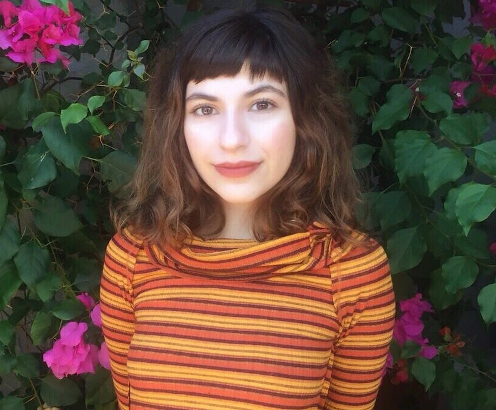
Kimia is a fourth-year Interdisciplinary Studies Field major focusing on Psychology, Legal Studies, and Sociology. She plans to pursue a PhD in Social Psychology and she is interested in intersectional research on intergroup relations, implicit bias, punitive attitudes, and interventions, particularly within the criminal justice system and K-12. She volunteers as a crisis counselor, organizes community workshops for immigrant youth, and leads a team of psychology research assistants in Berkeley’s Bias and Discrimination Lab. In her free time, Kimia enjoys watching documentaries, cuddling her cat, and drinking tea.
Kimia
Editor
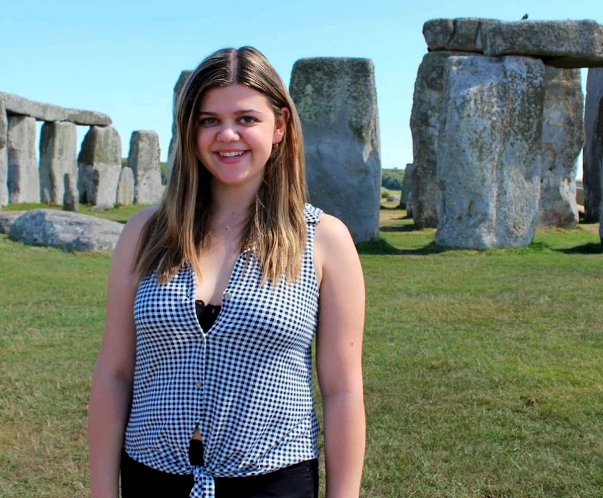
Maria is a third-year psychology major and pre-med student. She currently works as a research assistant at the UC Berkeley Emotion and Social Interaction lab where she helps investigate the relationship between schizophrenia and emotion regulation and memory. Her ultimate goal is to become a psychiatrist, reduce the stigma around mental health, and emphasize the importance of a global perspective in considering mental illness. Outside of her psychology-related interests, she loves Netflix, cats, and running.
Maria
Editor
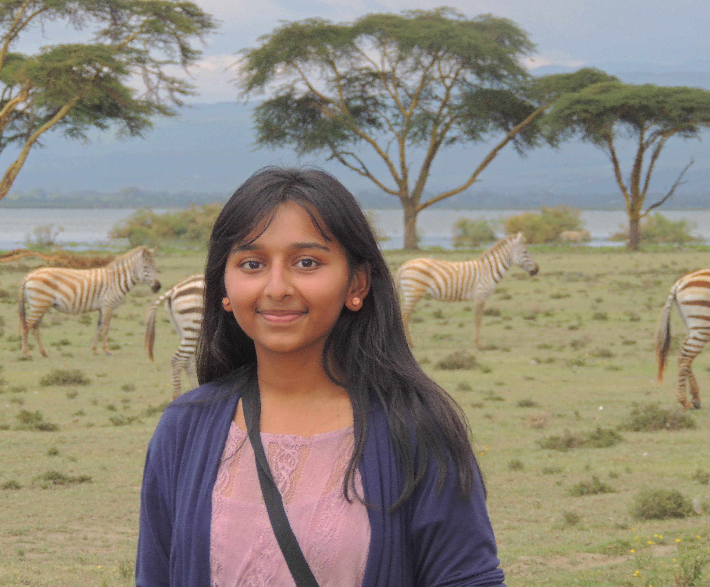
Merusha came from the great state of Texas to study psychology at UC Berkeley. Her current research involvements include work in the social/personality psychology sector, under Dana Carney at the Haas School of Business. Her team works on examining nonverbal behavior in response to power/status, pain, and deception. Merusha also has a keen interest in the field of abnormal/criminal psychology. She aspires to work with America's massive incarcerated population through research and cognitive behavioral therapy. Merusha is also currently pursuing positions in peer counseling as a precursor to a clinical emphasis in her major. For fun, Merusha likes getting lost in nihilistic thought and dedicating many a weekend to Netflix originals.
Merusha
Editor
Morgan is a current junior from SoCal, majoring in Interdisciplinary Studies (ISF) with a focus on business, psychology, and data. In her free time, she loves running, horseback riding, and traveling. She works in the music industry, both marketing for a record label and doing A&R for a festival/event company. Her favorite food is chocolate and she is specifically interested in research regarding the intersection of psycholinguistics and sociolinguistics.
Morgan
EditorPamee Sapasap is a third year Psychology major and research assistant at the Alison Gopnik lab. She is particularly interested in cognitive developmental psychology and in the future, hopes to conduct research in language acquisition in children. She is also a mentor for OASES and moderator for Supportiv. In her free time, she enjoys trying new recipes and watching Dr. Phil.
Pamee Sapasap
EditorSofía is a third-year Psychology major at UC Berkeley. She is particularly interested in clinical and developmental psychology, and her goal is to become a child and adolescent therapist. During her time at Cal, she has been a peer-counselor for Student-to-Student Peer Counseling, a facilitator for the Intro to Counseling DeCal Course, and a writer for the Public Health Advocate publication.This past summer, she interned in the psychiatric unit of a pediatric hospital in Madrid, Spain. Currently, she is an undergraduate research assistant at the Family and Culture Lab in the Department of Psychology, where she explores the relationship between bilingualism and socioemotional development in young children. In her free time, she enjoys going to the beach, exploring the Bay Area, traveling/going on road trips, and spending time with her family and friends.
Sofía
Editor
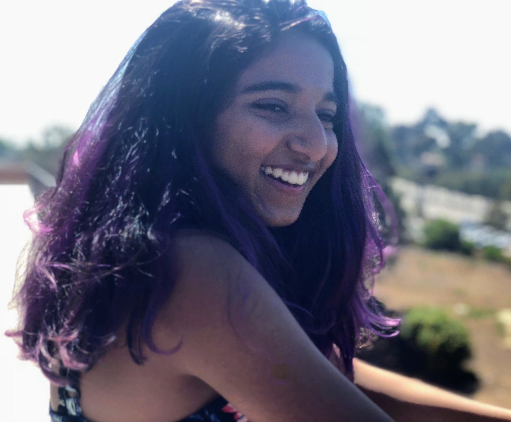
Tavisha is a first-year intended Psychology major from San Diego, CA. She is mainly interested in clinical psychology, mental health awareness, and research. She is mainly interested in positive psychology and the study of mental wellness, but loves every other aspect of psychology, too. Outside of UJPB, Tavisha is training to be a counselor for Berkeley's SSPC - Student-Student Peer Counseling, and has started her first semester in the Berkeley Fiction Review literary journal. Outside of anything academic, Tavisha loves to read, write, dance, sing, and hang out with her friends.
Tavisha
Editor
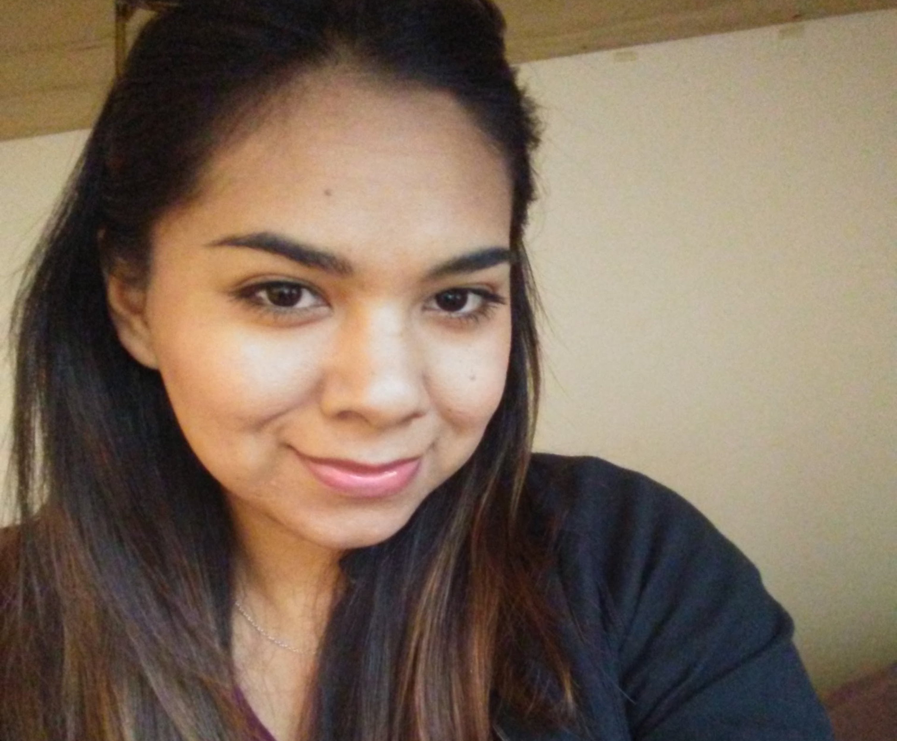
Wendy is a fifth-year Psychology major graduating in Fall 2018. She will pursue a Ph.D. in clinical psychology in the near future and is interested in severe mental illnesses (SMI) such as depression, anxiety, and schizophrenia. She is a research assistant in the Golden Bear Sleep and Mood Research Clinic where she assesses clients with psychological measures who meet criteria for depressive disorders. She is also a research assistant in the D’Esposito Cognitive Neuroscience lab where she completed her honors thesis! In her free time, she enjoys being surrounded by nature, spending time with friends, and exploring the bay area.
Wendy
Editor